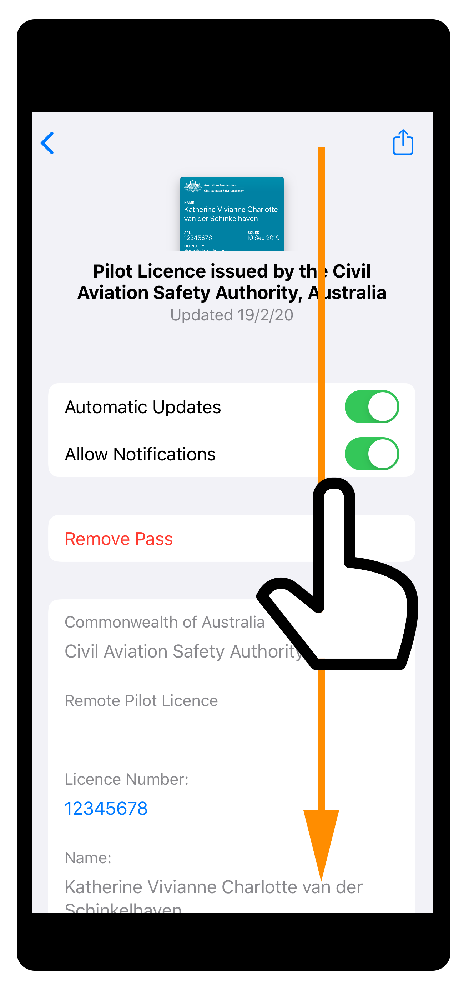
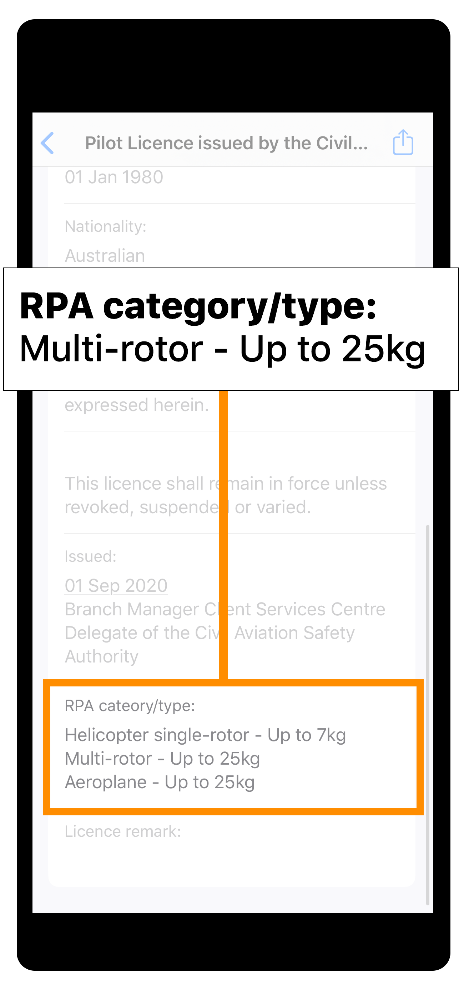

Go to top of page
Verify remote pilot licences
To verify a remote pilot licence (RePL), you must be logged into the myCASA portal and have a linked aviation reference number (ARN).
Once you've logged into the myCASA portal, select "verify remote pilot licence" in the "licences and authorisations" section on your dashboard.
You can then scan the QR code on the RePL or enter the family name, ARN and verification code shown on the licence.
How to view details of a digital RePL
1. tap the three dots at the top right of your screen
2. scroll down to the bottom of the licence
3. Categories and types can be viewed at the bottom in this section
 Last modified: 18 March 2020